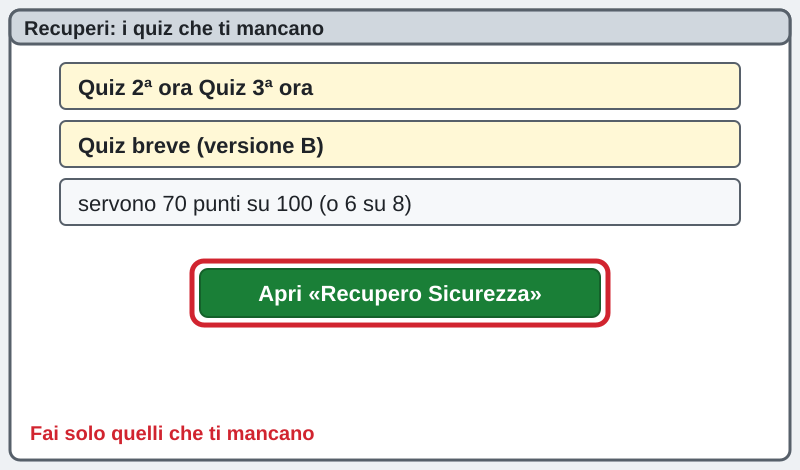
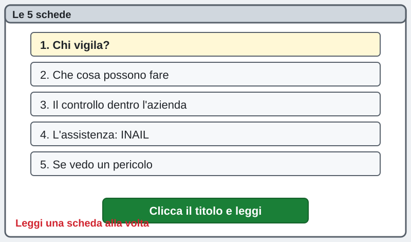
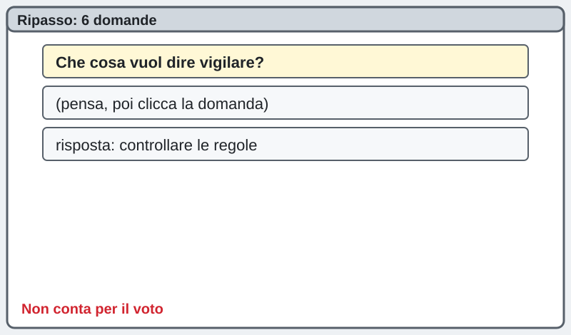
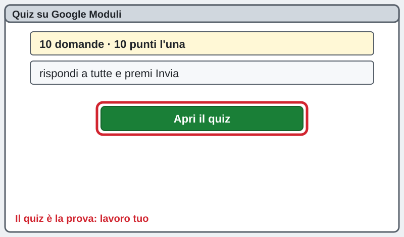
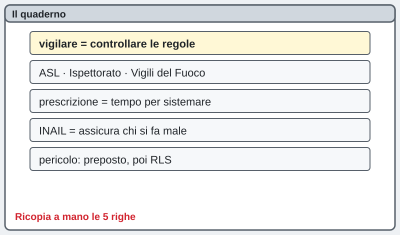
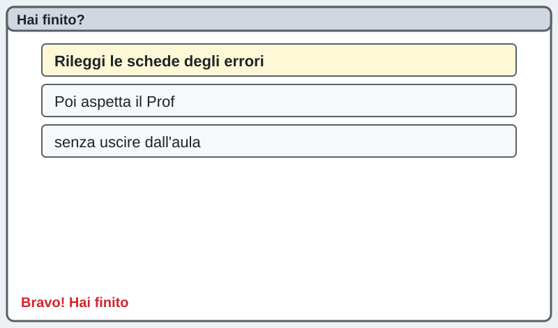

1INF · Sicurezza · mercoledì 04/11/2026 · formazione specifica, 4ª ora
Sicurezza sul lavoro · 4ª ora: organi di vigilanza, controllo e assistenza
السلامة في العمل · الساعة 4: هيئات الرقابة والمراقبة والمساعدة
工作安全 · 第 4 节：监督、检查和协助机构
La pagina viene aggiornata spesso durante la lezione: premi F5 per vedere la versione nuova. · اضغط F5 لرؤية النسخة الجديدة. · 按 F5 查看新版本。
I TUOI QUIZ DI SICUREZZA
اختبارات السلامة الخاصة بك
你的安全测验
Controlla quali quiz hai fatto · تحقق من الاختبارات التي أجريتها · 查看你做了哪些测验Quiz 2ª ora · اختبار الساعة 2 · 第 2 节测验Quiz 3ª ora · اختبار الساعة 3 · 第 3 节测验Quiz breve B · اختبار قصير B · 简短测验 BQuiz 4ª ora (oggi) · اختبار الساعة 4 (اليوم) · 第 4 节测验（今天）Per superare un quiz serve il 70% (quiz B: 6 su 8). Fai solo quello che ti manca. Premi F5 per vedere i dati nuovi.
للنجاح في الاختبار تحتاج 70% (الاختبار B: 6 من 8). افعل فقط ما ينقصك. اضغط F5 لرؤية البيانات الجديدة.
通过测验需要 70%（测验 B：8 题对 6 题）。只做你还没做的。按 F5 查看新数据。
Chi sei? · من أنت؟ · 你是谁？
Scrivi nome e cognome: serve al cruscotto per vedere a che punto sei.
Sei bloccato? Scrivi la domanda nella casella dell'assistente in fondo alla pagina: ti risponde subito. Alza la mano solo se il PC non funziona.
إذا علقت، اكتب سؤالك في خانة المساعد أسفل الصفحة: يجيبك فوراً. ارفع يدك فقط إذا كان الحاسوب لا يعمل.
卡住了就在页面底部的助手框里写问题，它马上回答。只有电脑坏了才举手。
Recuperi · تعويض · 补课
Se devi recuperare un quiz di Sicurezza (2ª ora, 3ª ora o quiz breve B), usa la pagina dedicata «Recupero Sicurezza» o i bottoni qui sotto. Apri «Come sto andando»: se accanto al tuo nome c'è scritto da recuperare, fai quel quiz nei primi 10 minuti. Se non c'è scritto niente, comincia dal passo 1.
إذا كان عليك تعويض اختبار سلامة (الساعة 2 أو 3 أو الاختبار القصير B)، استخدم صفحة «Recupero Sicurezza» أو الأزرار أدناه. افتح «Come sto andando»: إذا كُتب بجانب اسمك «da recuperare» فأجرِ ذلك الاختبار في أول 10 دقائق. وإلا فابدأ من الخطوة 1.
如果你要补安全课的测验（第 2 节、第 3 节或简短测验 B），用专门的页面「Recupero Sicurezza」或下面的按钮。打开「Come sto andando」：名字旁写着 da recuperare 就在前 10 分钟做那个测验；什么都没写就从第 1 步开始。
Pagina «Recupero Sicurezza»Come sto andando
Quiz 2ª oraQuiz 3ª oraQuiz breve (versione B)

1Leggi le 5 schede
اقرأ البطاقات الخمس
读 5 张卡片
Clicca il titolo di ogni scheda e leggila. Quando le hai lette tutte e 5, premi «Ho fatto!». Non serve correre: il quiz viene dopo.
اضغط على عنوان كل بطاقة واقرأها. عندما تقرأ الخمس اضغط «Ho fatto!». لا داعي للعجلة.
点每张卡片的标题来读。5 张都读完后按「Ho fatto!」。不用着急，测验在后面。
1. Chi vigila? (gli organi di vigilanza)
Vigilare = controllare che le regole di sicurezza siano rispettate. Lo fanno enti dello Stato: la ASL (Azienda Sanitaria Locale, con i suoi tecnici della prevenzione), l'Ispettorato del Lavoro e i Vigili del Fuoco (per gli incendi). Possono entrare in azienda anche senza avvisare.
المراقبة = التحقق من احترام قواعد السلامة. تقوم بها جهات الدولة: ASL (الوحدة الصحية المحلية) ومفتشية العمل (Ispettorato del Lavoro) وفرق الإطفاء (للحرائق). يمكنهم دخول الشركة دون إنذار.
监督 = 检查安全规则有没有被遵守。由国家机构负责：ASL（地方卫生局，有预防技术人员）、劳动监察局和消防队（防火方面）。他们可以不提前通知就进入公司。
2. Che cosa possono fare
Controllano i documenti (per esempio il DVR) e i luoghi di lavoro. Se trovano un errore non grave danno una prescrizione: un tempo per sistemarlo. Se il pericolo è grave possono fermare il lavoro. Le sanzioni (multe e, nei casi gravi, anche il penale) colpiscono soprattutto chi deve organizzare la sicurezza: datore di lavoro, dirigenti, preposti.
يفحصون الوثائق (مثل DVR) وأماكن العمل. إذا وجدوا خطأً غير خطير يعطون «prescrizione»: مهلة لإصلاحه. إذا كان الخطر كبيراً يمكنهم إيقاف العمل. العقوبات (غرامات وفي الحالات الخطيرة عقوبة جنائية) تطال خصوصاً من ينظّم السلامة: صاحب العمل والمديرين والمشرفين.
他们检查文件（比如 DVR）和工作场所。发现不严重的错误，会给一个 prescrizione：限期改正。危险严重时可以叫停工作。处罚（罚款，严重时还有刑事责任）主要落在负责组织安全的人身上：雇主、经理、现场主管。
3. Il controllo dentro l'azienda
Prima degli ispettori c'è chi controlla ogni giorno: il preposto (il caposquadra che guarda che le regole siano rispettate), l'RSPP (studia i rischi), il medico competente (la salute) e l'RLS (parla per i colleghi). Tu devi usare i DPI e segnalare i pericoli.
قبل المفتشين هناك من يراقب كل يوم: الـ preposto (رئيس الفريق الذي يتأكد من احترام القواعد) والـ RSPP (يدرس المخاطر) والطبيب المختص (الصحة) والـ RLS (يتكلم باسم الزملاء). أنت عليك استخدام وسائل الحماية DPI والإبلاغ عن الأخطار.
检查人员来之前，每天都有人在检查：preposto（班组长，看大家守不守规则）、RSPP（研究风险）、职业医生（健康）和 RLS（替同事说话）。你要使用防护用品 DPI，并报告危险。
4. L'assistenza: l'INAIL e gli altri
Assistere = aiutare e informare. L'INAIL è l'assicurazione contro gli infortuni sul lavoro e le malattie professionali: paga le cure e un'indennità. La assicurazione la paga il datore di lavoro. Anche la ASL e gli organismi paritetici (datori di lavoro e sindacati insieme) danno informazione e formazione.
المساعدة = دعم وإعلام. الـ INAIL هو التأمين ضد حوادث العمل والأمراض المهنية: يدفع العلاج وتعويضاً. صاحب العمل هو من يدفع التأمين. كما تقدّم ASL والهيئات المشتركة (أصحاب العمل والنقابات معاً) المعلومات والتدريب.
协助 = 帮助和告知。INAIL 是工伤和职业病保险：支付治疗费和补助金。保险费由雇主交。ASL 和联合机构（雇主和工会一起）也提供信息和培训。
5. Se vedo un pericolo
1) Lo dico subito al preposto o al capo. 2) Se non basta, lo dico all'RLS. 3) Se nessuno ascolta, l'RLS può rivolgersi agli organi di vigilanza (ASL, Ispettorato). Non puoi essere punito per aver segnalato un pericolo.
1) أقول فوراً للـ preposto أو للرئيس. 2) إن لم يكفِ أقول للـ RLS. 3) إن لم يستمع أحد يمكن للـ RLS اللجوء إلى هيئات الرقابة (ASL، Ispettorato). لا يجوز معاقبتك لأنك أبلغت عن خطر.
1）马上告诉 preposto 或老板。2）不够的话告诉 RLS。3）没人理会，RLS 可以找监督机构（ASL、劳动监察局）。你不会因为报告危险而受罚。

2Ripasso: 6 domande
مراجعة: 6 أسئلة
复习：6 个问题
Pensa la risposta, poi clicca la domanda per vedere quella giusta. Non conta per il voto: serve per prepararti.
فكّر في الإجابة ثم اضغط على السؤال لترى الإجابة الصحيحة. لا تحتسب في العلامة.
先想答案，再点问题看正确答案。不算分，只是帮你准备。
Che cosa vuol dire vigilare?
Controllare che le regole di sicurezza siano rispettate.
Quali sono due organi di vigilanza?
La ASL e l'Ispettorato del Lavoro (anche i Vigili del Fuoco per gli incendi).
Che cos'è una prescrizione?
Il tempo che l'ispettore ti dà per sistemare un errore non grave.
Chi controlla ogni giorno dentro l'azienda?
Il preposto, insieme a RSPP, RLS e medico competente.
A che serve l'INAIL?
Assicura chi si fa male lavorando e paga cure e indennità.
Vedi un pericolo: a chi lo dici per primo?
Al preposto o al capo; poi, se serve, all'RLS.

3Il quiz su Google Moduli
اختبار Google Moduli
Google Moduli 测验
Premi il bottone verde: sono 10 domande, 10 punti l'una, massimo 100. Rispondi a tutte e premi Invia. Per superarlo servono 70 punti. Il quiz è la tua prova: lavoro tuo, senza aiuto dei compagni.
اضغط الزر الأخضر: 10 أسئلة، 10 نقاط لكل سؤال، الحد الأقصى 100. أجب عن الكل واضغط Invia. للنجاح تحتاج 70 نقطة. الاختبار هو امتحانك: عملك أنت.
按绿色按钮：10 道题，每题 10 分，满分 100。全部回答后按 Invia。要 70 分才算通过。测验是你自己的考试，不要靠同学帮忙。
Apri il quiz della 4ª ora · افتح الاختبار · 打开测验
4Sul quaderno
في الدفتر
写在本子上
Ricopia a mano le 5 righe gialle sul quaderno. Poi premi «Ho fatto!».
انسخ بيدك الأسطر الخمسة الصفراء في الدفتر.
把 5 行黄色的字抄在本子上。
vigilare = controllare le regole
ASL, Ispettorato, Vigili del Fuoco
prescrizione = tempo per sistemare
INAIL = assicura chi si fa male
pericolo: prima preposto, poi RLS
5Hai finito prima degli altri?
هل أنهيت قبل الآخرين؟
比别人先做完了？
Rileggi le schede delle domande che hai sbagliato. Se hai un recupero da fare, fallo adesso con i bottoni in alto. Poi aspetta il Prof senza uscire dall'aula.
أعد قراءة بطاقات الأسئلة التي أخطأت فيها. إن كان عليك تعويض فافعله الآن بالأزرار في الأعلى. ثم انتظر الأستاذ داخل القاعة.
重读你答错的题对应的卡片。如果有要补的测验，现在用上面的按钮去做。然后留在教室等老师。

La pagina viene aggiornata spesso durante la lezione: premi F5 per vedere la versione nuova. · اضغط F5 لرؤية النسخة الجديدة. · 按 F5 查看新版本。